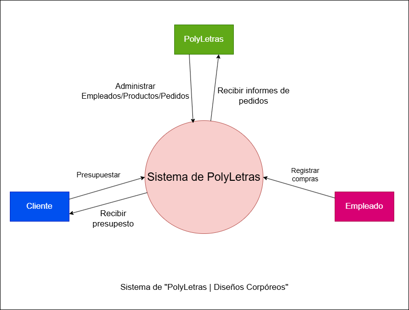
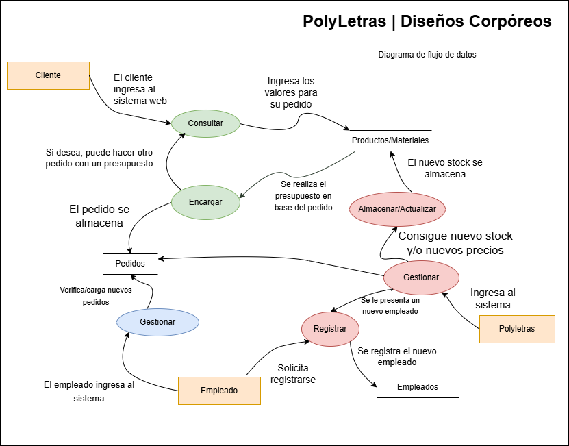

Resumen
El proyecto Polyletras consiste en el desarrollo de un sistema de gestión para un emprendimiento local dedicado a la venta de cartelería, alquiler y decoración de eventos. Se implementó una solución tecnológica que incluye una aplicación de escritorio desarrollada en NetBeans, conectada a una base de datos, así como una página web en HTML para consultas y solicitudes de clientes. Este sistema busca optimizar la administración del negocio, mejorar el control de inventarios y garantizar la seguridad de los datos sensibles.
Polyletras surge como una solución tecnológica para modernizar y optimizar las operaciones de un emprendimiento. Este negocio, liderado por una emprendedora, enfrentaba varios desafíos, como la falta de un sistema centralizado para gestionar pedidos, el manejo manual de inventarios, y la ausencia de herramientas digitales que facilitaran la comunicación con los clientes.
Además, se priorizó el enfoque en la seguridad informática, implementando medidas preventivas como la configuración de roles de usuario, el cifrado de datos y el respaldo regular de la base de datos.
Surgió la necesidad de implementar una solución integral que no solo optimizara los procesos, sino que también asegurara la continuidad del negocio frente a posibles incidentes tecnológicos o de seguridad.
En resumen, este proyecto no solo soluciona problemas operativos existentes, sino que también posiciona a Polyletras como un negocio innovador, capaz de escalar y adaptarse a las necesidades de un mercado digitalizado.
Introducción
En el contexto actual, donde la tecnología avanza rápidamente y redefine las dinámicas de los negocios, las empresas que buscan mantenerse competitivas deben adaptarse a las nuevas herramientas digitales. Polyletras, enfrenta el reto de modernizar sus operaciones para responder a las crecientes demandas de sus clientes.
Este documento tiene como objetivo principal detallar la política de seguridad desarrollada como parte integral del sistema de gestión de Polyletras, el cual fue diseñado para optimizar los procesos internos del negocio y garantizar la protección de sus datos sensibles. La integración de soluciones tecnológicas no solo mejora la eficiencia operativa, sino que también introduce nuevos desafíos relacionados con la seguridad informática, los cuales han sido abordados cuidadosamente durante el desarrollo del proyecto.
Antecedentes del Proyecto
Polyletras, en sus primeras etapas, gestionaba todas sus operaciones de manera manual: desde el registro de pedidos hasta el control de inventarios y las consultas de los clientes. Esta metodología resultaba en inconsistencias, pérdida de tiempo y, en ocasiones, insatisfacción por parte de los clientes. Además, el emprendimiento carecía de una estrategia clara para proteger la información que recopilaba, exponiéndose a riesgos como la pérdida de datos o accesos no autorizados.
Propósito de este Documento
La introducción de herramientas tecnológicas plantea la necesidad de implementar políticas de seguridad robustas que garanticen la confidencialidad, integridad y disponibilidad de los datos.
Objetivos y Análisis
El proyecto Polyletras busca responder a las necesidades operativas y estratégicas de un negocio local que se encuentra en un proceso de transformación digital. Para alcanzar este objetivo, se han establecido una serie de objetivos generales y específicos, cada uno alineado con la mejora continua de los procesos internos y la optimización de la experiencia del cliente. A continuación, se describen estos objetivos:
Objetivo General:
Desarrollar e implementar una solución tecnológica que permita a Polyletras gestionar de manera eficiente sus operaciones internas, mejorar la interacción con los clientes y garantizar la protección de los datos mediante una política de seguridad.
- Digitalizar la gestión de inventarios, pedidos y clientes.
- Asegurar la protección de datos mediante políticas de seguridad.
- Crear una plataforma accesible para mejorar la experiencia de los clientes.
Objetivos Específicos:
1.Digitalización de procesos internos:
Establecer un sistema centralizado para gestionar el inventario de productos, los pedidos de los clientes, la facturación y el control de pagos.
2.Mejorar la atención al cliente mediante una plataforma digital:
Desarrollar una página web que proporcione una interfaz amigable y accesible para los clientes, donde puedan consultar catálogos, obtener presupuestos, realizar pedidos y comunicarse con la empresa de manera eficiente.
3.Implementación de políticas de seguridad informática:
Asegurar que los datos sensibles (como información personal de clientes, detalles de pedidos y facturación) estén protegidos contra accesos no autorizados, pérdidas o manipulaciones.
4.Optimización de la toma de decisiones empresariales mediante el uso de reportes y análisis:
Integrar herramientas de generación de reportes que permitan a la emprendedora tomar decisiones informadas sobre el inventario, los productos más vendidos y las preferencias de los clientes, favoreciendo una gestión más estratégica y eficaz.
5.Escalabilidad del sistema para futuras mejoras:
Desarrollar un sistema que permita la integración de nuevas funcionalidades a medida que el negocio crezca, como el sistema de pagos en línea, la integración con plataformas de redes sociales y la posibilidad de expandir la capacidad del inventario.
Análisis de la Situación Actual
Antes de la implementación del sistema de gestión, Polyletras operaba con una serie de métodos manuales que resultaban ineficientes y propensos a errores. Estos métodos afectaban la calidad del servicio, la satisfacción del cliente y el control interno de la empresa. A continuación, se describen los principales problemas identificados en la situación inicial:
1.Gestión de Inventarios:
Los registros de productos y materiales se realizaban de manera manual, lo que dificultaba el control de las existencias, provocando retrasos en el proceso de reposición y, en ocasiones, el desabastecimiento de artículos clave para la decoración de eventos. Además, no existía un sistema claro para gestionar el historial de movimientos de inventarios.
2.Atención al Cliente:
La comunicación con los clientes se realizaba principalmente por teléfono o en persona, lo que resultaba en tiempos de respuesta largas y en una falta de transparencia en el proceso de solicitud de presupuestos. Esto no solo afectaba la eficiencia, sino también la percepción del servicio por parte de los clientes.
3.Falta de Seguridad de la Información:
No se contaba con medidas adecuadas para proteger los datos sensibles. La información de los clientes, como direcciones, números de teléfono y detalles de pedidos, se almacenaba de manera poco segura, lo que exponía al negocio a riesgos de seguridad cibernética.
4.Dificultades en la Toma de Decisiones:
Debido a la falta de un sistema centralizado, la emprendedora no podía acceder a reportes precisos o en tiempo real sobre el estado de las operaciones. Esto dificultaba la toma de decisiones informadas, como la reposición de productos, la planificación de eventos y la evaluación de las ventas.
5.Escalabilidad Limitada:
Con el crecimiento del negocio, las herramientas manuales no lograban adaptarse a las nuevas demandas, lo que limitaba el potencial de expansión de Polyletras. La falta de un sistema flexible imposibilitaba la incorporación de nuevas funcionalidades que podrían mejorar el servicio al cliente y la eficiencia operativa.
Metodología y Herramientas
Metodología:
Se utilizó un enfoque ágil, con iteraciones cortas para el desarrollo y pruebas.
Polyletras Aplico la metodología Ágil Scrum:
1.Sprint Inicial de Planificación:
1.Objetivo: Determinar los requisitos generales del sistema de gestión y la página web.
2.Se pueden definir los principales módulos que se necesitan, como la gestión de inventarios, la atención al cliente (página web) y la implementación de seguridad.
2.Desarrollo Iterativo y Entregas Parciales:
1. Sprint 1: Crear el módulo de gestión de inventarios y establecer la base de datos. Esto se podría entregar al final del primer sprint para que el cliente pueda comenzar a usar el sistema.
2. Sprint 2: Desarrollar la interfaz de la página web y las funcionalidades de interacción básica con los clientes (consulta de productos, solicitud de presupuestos).
3. Sprint 3: Implementar la seguridad informática (cifrado de datos, controles de acceso) y pruebas de vulnerabilidad.
4. Sprint 4: Optimización y ajuste de reportes y análisis, conforme a las necesidades de la emprendedora, para mejorar la toma de decisiones.
3.Revisión y Ajustes:
1. Al final de cada sprint, se realizarían reuniones de revisión donde el cliente (en este caso, la emprendedora de Polyletras) revisaría las entregas y proporcionaría feedback (es un proceso de retroalimentación). Este feedback permitiría realizar ajustes o cambios para mejorar la funcionalidad.
Ejemplo de Feedback en Polyletras: En el caso de Polyletras, el feedback de la emprendedora es crucial. Ella podría revisar las entregas parciales del sistema de gestión y la página web durante cada sprint, proporcionando sus comentarios sobre lo que funciona bien, lo que necesita ajustes o lo que le gustaría agregar o cambiar.
4.Implementación de Cambios y Mejoras:
1.Sprint 5: Según el feedback recibido, se podrían realizar mejoras en la plataforma web, agregar nuevas funcionalidades y ajustar detalles de la base de datos.
5.Entregas Finales:
1.El sistema completo se entregaría al final de un par de sprints finales, asegurando que todos los aspectos del proyecto estén cubiertos y funcionando correctamente, según las especificaciones y necesidades del cliente.
Herramientas:
1.NetBeans para el desarrollo del sistema de escritorio.
2.MySQL como base de datos para almacenamiento y consultas.
3.HTML y CSS para la creación de la página web.
Herramientas para el Desarrollo de Software:
NetBeans:
Descripción: NetBeans es un entorno de desarrollo integrado que permite crear aplicaciones de escritorio con Java. Es una herramienta ideal para proyectos como el de Polyletras, ya que facilita el desarrollo rápido y organizado de software.
Herramientas para la Base de Datos
MySQL: Descripción: MySQL es un sistema de gestión de bases de datos relacional que organiza, gestiona y permite el acceso a la información del negocio de manera eficiente.
Herramientas para el Diseño Web
HTML/CSS: Descripción: HTML es el lenguaje estándar para crear páginas web, y CSS se utiliza para diseñar y dar estilo a las páginas.
Características de Componentes
En esta sección, vamos a describir los diferentes componentes que forman parte del sistema o proyecto de Polyletras, como los módulos, funcionalidades y elementos clave de la infraestructura tanto en la parte de software como de hardware, en función de las necesidades del negocio.
1.Sistema de escritorio: Permite gestionar altas, bajas y consultas.
2.Base de datos: Almacena información de clientes, productos y eventos.
3.Página web: Ofrece una interfaz para que los clientes puedan realizar consultas.
Componente 1: Sistema de Gestión de Inventarios
Descripción:
El sistema de gestión de inventarios es un módulo fundamental que permite a Polyletras controlar en tiempo real el stock de productos que ofrece para eventos y decoraciones. Este sistema facilita la administración de artículos, materiales y productos alquilables, permitiendo realizar seguimientos de disponibilidad y movimientos.
Características:
Registro de Productos: La base de datos incluye categorías como nombre, cantidad, descripción, precio y fecha de última actualización.
Control de Stock: Los productos son actualizados de manera automática al realizar ventas o alquileres, con alertas que notifican cuando el stock de algún artículo es bajo.
Categorías de Productos: El sistema clasifica los productos por tipo (cartelería, decoración, mobiliario, etc.), lo que facilita la búsqueda y el mantenimiento.
Interfaz del Usuario: El diseño debe ser amigable, permitiendo a la emprendedora consultar fácilmente el inventario, agregar nuevos productos y actualizar cantidades.
Componente 2: Página Web para Clientes
Descripción:
La página web tiene como objetivo ofrecer a los clientes una plataforma intuitiva para que puedan consultar el catálogo de productos de Polyletras, hacer solicitudes de presupuesto, y contactar con la emprendedora para el alquiler o compra de artículos para eventos.
Características:
Catálogo de Productos: Una sección interactiva donde los clientes puedan ver los productos disponibles, con descripciones detalladas, fotos y precios.
Solicitar Presupuesto: Un formulario que permite a los clientes enviar sus necesidades específicas para obtener una cotización personalizada.
Interacción en Tiempo Real: Una opción de chat en línea que permite a los clientes preguntar sobre productos o servicios en tiempo real.
Diseño Responsivo: La web se adapta a diferentes dispositivos (PCs, tablets y smartphones), garantizando una experiencia óptima de usuario.
Componente 3: Base de Datos Relacional (MySQL)
Descripción:
La base de datos es el componente clave donde se almacena toda la información relacionada con productos, clientes, ventas y operaciones del negocio. Se usa MySQL debido a su robustez y facilidad de integración con el sistema Java desarrollado en NetBeans.
Características:
Tablas Relacionales: Se utilizan varias tablas para organizar los datos, tales como:
Productos: Contiene información sobre cada artículo en inventario.
Clientes: Almacena los datos de contacto de los clientes.
Ventas/Alquileres: Registra todas las transacciones realizadas, tanto de compra como de alquiler.
Integración con el Sistema de Gestión: La base de datos está conectada con la aplicación de gestión, de modo que cualquier cambio en el inventario se refleja automáticamente en la base de datos.
Consultas y Reportes: La base de datos permite la creación de consultas avanzadas y la generación de reportes, como el análisis de ventas por cliente, inventario por tipo de producto, etc.
Componente 4: Seguridad Informática (Firewall y Cifrado SSL/TLS)
Descripción: La seguridad es una parte esencial en el sistema de Polyletras para proteger tanto los datos del cliente como la información del negocio. Se implementan firewalls y cifrado SSL/TLS para garantizar la integridad de la información y evitar accesos no autorizados.
Características:
Firewall: Protege los sistemas de intrusos externos y mantiene la seguridad de la red.
Cifrado SSL/TLS: Los datos transmitidos entre el servidor y los clientes están cifrados, protegiendo la información sensible como datos personales y pagos durante las transacciones.
Autenticación de Usuarios: Se implementa un sistema de autenticación seguro para garantizar que solo las personas autorizadas puedan acceder al sistema de gestión.
Componente 5: Sistema de Reportes y Análisis
Descripción: El sistema de reportes permite generar análisis detallados sobre el rendimiento del negocio, el estado del inventario, las ventas realizadas, y el comportamiento de los clientes. Es esencial para tomar decisiones estratégicas basadas en datos.
Características:
Reportes de Ventas: Análisis de ventas por cliente, por producto, y por periodo de tiempo.
Inventario: Reportes sobre el estado actual del inventario, alertas cuando los productos están por agotarse.
Análisis de Tendencias: Utiliza herramientas como Google hacer consultas avanzadas en MySQL para analizar las preferencias de los clientes, productos más solicitados, etc.
Componente 6: Interfaz de Usuario para la Gestión Administrativa
Descripción: La interfaz de usuario está diseñada para ser sencilla, intuitiva y eficaz para la administración de la empresa. Permite a la emprendedora gestionar el inventario, realizar ventas, generar presupuestos, y controlar las finanzas del negocio.
Características: Interfaz Gráfica: Desarrollada en Java usando herramientas como Swing o Java, permite una gestión eficiente sin necesidad de conocimientos técnicos avanzados.
Accesibilidad: Fácil navegación entre las diferentes secciones (productos, clientes, reportes, ventas).
Notificaciones: Alertas sobre bajos niveles de inventario o cuando un presupuesto está listo para ser enviado.
Componente 7: Sistema de Respaldo (Backup)
Descripción: Un sistema de copias de seguridad (backup) regular para asegurar la recuperación de datos en caso de fallos o pérdidas. Esto incluye tanto la base de datos como la información de la página web.
Características: Backup Automático: Programación de copias de seguridad diarias o semanales de la base de datos y otros archivos importantes.
Recuperación Rápida: Permite la restauración del sistema a su estado anterior en caso de cualquier incidente.
Almacenamiento en la Nube: Las copias de seguridad pueden almacenarse en plataformas como Google Drive o Amazon S3 para garantizar su seguridad.
Componentes y Requisitos
Los requisitos son aquellos que definen las funciones que el sistema debe realizar para cumplir con los objetivos del negocio. Para el proyecto de Polyletras, estos son algunos de los requisitos clave:
Gestión de Inventario:
•El sistema debe permitir el seguimiento de los productos disponibles, las cantidades, las fechas de adquisición y de alquiler.
•Debe permitir la actualización automática del stock al registrar ventas o alquileres.
•Generar reportes periódicos sobre el estado del inventario.
Gestión de Clientes:
•El sistema debe permitir la creación, actualización y eliminación de registros de clientes.
•Cada cliente debe tener un historial de compras y alquileres.
•Debe permitir la generación de presupuestos para los clientes basados en productos seleccionados.
Generación de Facturas:
•El sistema debe generar facturas detalladas de compras y alquileres, con toda la información de los productos, cantidades, precios y datos del cliente.
Página Web Interactiva:
•La página debe ser intuitiva y fácil de usar, permitiendo a los clientes visualizar el catálogo de productos, hacer consultas y realizar solicitudes de presupuesto.
Notificaciones y Alertas:
•El sistema debe enviar alertas a la administradora cuando el stock de productos esté por agotarse.
•Notificaciones cuando un presupuesto esté listo para ser enviado al cliente o cuando un cliente solicite información adicional.
Seguridad de Datos:
•Todos los datos deben estar protegidos con cifrado SSL/TLS para garantizar la privacidad de la información sensible (como datos de clientes, detalles de pagos, etc.).
•El sistema debe contar con un sistema de autenticación para los usuarios internos (empleados, administradora).
Requisitos para el sistema (Datos)
Tipos de datos requeridos:
Datos del cliente:
•Nombre completo.
•Teléfono.
•Dirección.
•Correo electrónico.
Datos del producto/servicio:
•Descripción del producto o servicio.
•Precio.
•Cantidad disponible (en caso de alquiler de objetos decorativos).
Datos de los eventos:
•Fecha y hora.
•Lugar del evento.
•Servicios contratados.
Datos de transacciones:
•Fecha de compra o alquiler.
•Método de pago.
•Total, de la transacción.
Requisitos de seguridad para los datos:
•Confidencialidad: Los datos sensibles como métodos de pago y detalles de contacto deben estar cifrados y accesibles solo para usuarios autorizados.
•Integridad: El sistema debe garantizar que los datos no puedan ser modificados sin autorización.
•Disponibilidad: El acceso a los datos debe estar garantizado durante el horario laboral o según las necesidades del negocio.
Requisitos de almacenamiento:
•Base de datos SQL con tablas para clientes, productos, servicios, eventos y transacciones.
•Copias de seguridad semanales para prevenir pérdida de información.
Requisitos legales:
•Cumplir con la Ley de Protección de Datos Personales vigente en tu país.
•Aviso de privacidad para informar a los clientes sobre el uso de sus datos.
Acceso a los datos:
•Usuarios administrativos: Acceso completo a todos los datos para gestionar inventario, clientes y eventos.
•Empleados: Acceso limitado a datos de clientes y servicios según su función.
• Clientes: Solo acceso a sus datos personales y transacciones a través de una interfaz pública o reportes.
Especificaciones (Diagrama de Contexto)
Componentes principales:
Sistema Central (PolyLetras):
•Gestión de clientes.
•Gestión de inventario y servicios.
•Registro de transacciones.
•Generación de reportes.
Entidades externas (actores):
•Administrador: Encargado de gestionar usuarios, inventario y reportes.
•Empleados: Manejan datos relacionados con clientes y eventos.
•Clientes: Consultan información de servicios, productos y transacciones.
•Proveedores: Suministran materiales o servicios relacionados con los productos ofrecidos.
•Sistema de pagos electrónicos: Plataforma externa para procesar pagos.
Relaciones entre componentes:
Cada actor interactúa con el sistema central según su rol. Por ejemplo:
•El Administrador puede ver y modificar datos de inventario.
•Los Empleados solo acceden a las funciones relacionadas con eventos o clientes asignados.
•Los Clientes interactúan para consultar o realizar contrataciones.
•El sistema de pagos recibe datos de transacciones y devuelve confirmaciones.

Diagrama de Flujo de Datos (Nivel 1)
Procesos internos del sistema:
•Gestión de clientes.
•Gestión de inventario y servicios.
•Gestión de eventos.
•Registro de transacciones.
•Generación de reportes.
Entidades externas:
•Administrador (PolyLetras)
•Empleados.
•Clientes.
Almacenes de datos internos:
•Base de datos de clientes.
•Base de datos de productos/servicios.
•Base de datos de transacciones.
Estructura:
Entrada de datos:
•El Administrador introduce nuevos datos de inventario y servicios.
•Los Empleados registran datos de eventos y clientes.
•Los Clientes realizan pedidos o consultas.
Procesamiento:
•El sistema actualiza la base de datos según las entradas.
•Calcula costos de servicios y genera reportes.
Salida de datos:
•Reportes para el Administrador.
Confirmaciones para los Clientes.

Ciclo de Vida - Modelo Iterativo
Usamos el Modelo Iterativo ya que nos permite desarrollar el sistema a través de ciclos repetitivos, refinando cada versión hasta alcanzar el producto final. Este enfoque fue elegido porque ofrece flexibilidad y adaptabilidad a los cambios durante el desarrollo del sistema para PolyLetras.
Fases del Modelo Iterativo aplicadas al sistema:
1.Planificación inicial:
•Objetivo: Definir los requisitos generales del sistema y priorizar las funcionalidades esenciales.
•Aplicación en PolyLetras: Se identificaron las necesidades principales, como la gestión de cartelería, eventos y la conexión con la base de datos para el control de inventarios.
2.Diseño de un prototipo inicial:
•Objetivo: Crear una versión básica del sistema que permita validar conceptos y funcionalidades clave.
•Aplicación en PolyLetras: Se desarrolló una interfaz inicial en NetBeans conectada a una base de datos para pruebas preliminares.
3.Prueba y evaluación del prototipo:
•Objetivo: Identificar problemas y obtener retroalimentación para mejorar.
•Aplicación en PolyLetras: Se realizaron pruebas con datos simulados de inventarios y reservas de eventos para ajustar las consultas y operaciones.
4.Iteraciones de desarrollo:
•Objetivo: Implementar mejoras y nuevas funcionalidades basadas en las observaciones de cada ciclo.
•Aplicación en PolyLetras: Se fueron añadiendo características, como altas y bajas de productos, personalización de eventos, y sincronización con la página web.
5.Entrega del sistema final:
•Objetivo: Proveer un sistema robusto y listo para su uso diario.
•Aplicación en PolyLetras: Se integró el sistema completo con la base de datos final y se prepararon guías de usuario para facilitar la adopción.
6.Mantenimiento y actualización:
•Objetivo: Garantizar que el sistema continúe funcionando correctamente y se adapte a nuevas necesidades.
•Aplicación en PolyLetras: Se establece un plan de revisiones periódicas para incorporar mejoras o solucionar posibles errores.